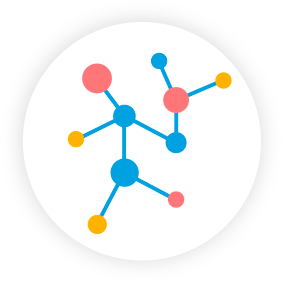
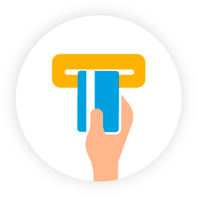
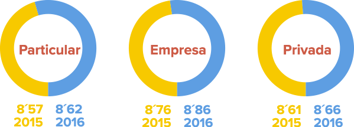
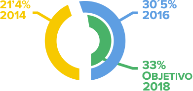

PRINCIPALES CIFRAS

5.379
La red de oficinas más extensa en España

9.433
La mayor red de cajeros
Más de 13,8 millones de Clientes

Nuestra esencia es el servicio a las personas y el desarrollo económico y social de los territorios donde estamos presentes. Trabajamos cada día para ser un banco líder por la calidad de nuestro servicio y para conseguir la confianza de nuestros clientes.
5.379
La red de oficinas más extensa en España
9.433
La mayor red de cajeros
Más de 13,8 millones de Clientes
Uno de nuestros principales propósitos es mantener una relación cercana con el cliente.
Para ello, hemos desarrollado un modelo de asesoramiento especializado y adaptado a cada cliente, y contamos con la mayor red de oficinas y de cajeros en España.
5.379 oficinas en España
100% presentes en poblaciones de más de 10.000 habitantes
22.220 empleados con equipos móviles
En CaixaBank disponemos de una amplia oferta comercial adaptada a las necesidades de cada uno de nuestros clientes. Su opinión es muy importante para nosotros. Por ello, impulsamos constantemente el diálogo activo con ellos. Todas las iniciativas que llevamos a cabo tienen como objetivo escuchar al cliente para conocer su nivel de satisfacción y su opinión sobre el servicio recibido.
Con la información que obtenemos a través de los focus groups, entrevistas y encuestas que realizamos a nuestros clientes, elaboramos dos índices de carácter estratégico para la entidad:
Índice de Satisfacción de clientes (ISC), indicador interno de la calidad del servicio. Escala de 1 a 10
Índice de recomendación NPS (Net Promoter Score), mide el porcentaje de recomendación de CaixaBank por parte de los clientes.
La entidad ha conseguido en 2016 la renovación del Sello EFQM, con una mejora de la puntuación hasta cerca de los 650 puntos, y la primera certificación AENOR de Europa de excelencia en Banca de Particulares y Negocios, así como para Comercio Exterior e Internacional.
En el ámbito de la reputación y la gestión responsable del negocio financiero, CaixaBank sigue aplicando los estándares sociales, medioambientales y de buen gobierno más exigentes.
Así, CaixaBank ha renovado una vez más su presencia en los índices Dow Jones Sustainability Index World y Europe, FTSE4Good o CDP Index, entre otros, que reconocen a los bancos más destacados en responsabilidad corporativa.
Además, y acorde con el modelo de banca social de cercanía y comprometido con todos sus stakeholders, el banco sigue potenciando la inclusión financiera gracias a la red de oficinas más extensa de España y a la concesión de microcréditos a través de MicroBank, entre otras iniciativas sociales.
Finalmente, cabe destacar el refuerzo continuado en gobierno corporativo, lo que ha sido reconocido por organizaciones externas como ISS, que otorga la máxima puntuación en este ámbito a CaixaBank.
La gestión de consultas y reclamaciones es clave en nuestra relación con el cliente y, para ello, disponemos de distintos canales de comunicación:
Puedes ampliar la información sobre nuestro servicio de Atención al Cliente.